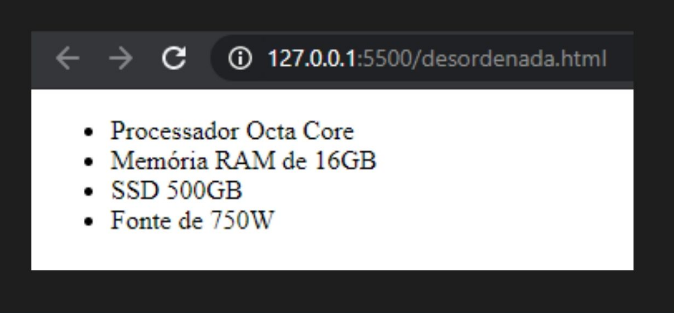

O objetivo da lista não ordenada é agrupar itens dentro do documento HTML, sem se preocupar com a sequência deles, como mostra a Figura 1.
-Uma lista não ordenada se inicia e se encerra respectivamente através das tags ul e /ul.
-Um item da lista se inicia e se encerra respectivamente através das tags li e /li.
-Dentro de um item, assim como na lista ordenada, podemos utilizar qualquer elemento HTML que quisermos (títulos, parágrafos, imagens etc.).
-A principal diferença entre a lista não ordenada e a lista ordenada está na maneira com que os itens de cada lista são apresentados.
-A lista não ordenada coloca marcadores antes de cada elemento, enquanto a lista ordenada enumera os itens.
-Nas listas não ordenadas também podemos alterar seu marcador padrão, que inicialmente é setado como disc (círculos pretos).